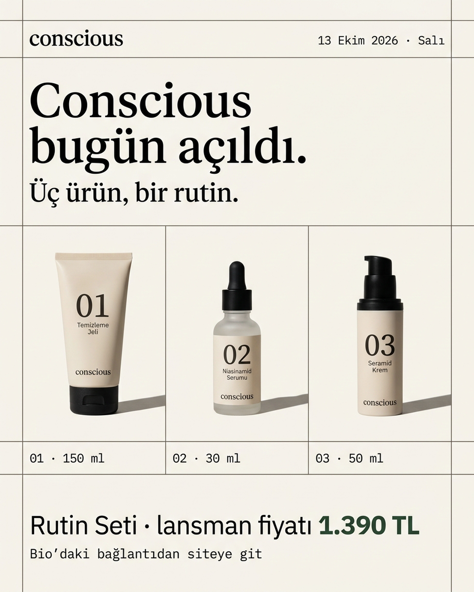
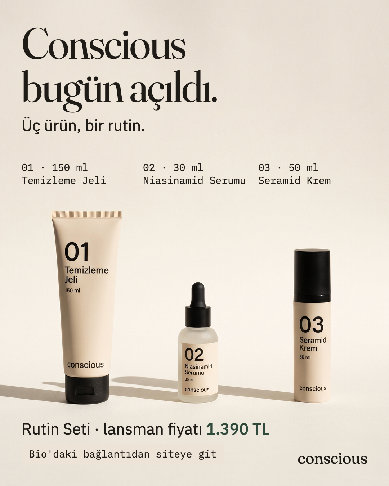

DESIGN.md kuralları
✓ uyuyor · ✗ uymuyor. Ölçülebilen her şey ölçüldü; ölçüm ya da kısa gerekçe kuralın altında.
| § | Kural | Önce | Sonra |
|---|---|---|---|
| 1 | Arketip Bilge, görsel yön A · Etiketİkisi de ızgara, sola yaslı yazı, büyük numara. | ✓ | ✓ |
| 2 | Yazı renkleri Yön A paletindenÖnce: başlık ≈ #000000, Mürekkep değil. Sonra: Mürekkep #1F1B17, fiyat Mühür #2F4A3A. | ✗ | ✓ |
| 2 | Fotoğraf üstündeki küçük yazı MürekkepÖnce: model siyahı. Sonra: hücre etiketleri ve CTA Mürekkep. | ✗ | ✓ |
| 2 | Kurşun yalnız çizgideİkisinde de Kurşun yalnız ızgara çizgisi. | ✓ | ✓ |
| 2 | Yasak renk çifti yok (normal 4,5:1, büyük 3:1)Önce: siyah yazı ≈ 19:1 (M1 ölçümü). Sonra: en düşük 7,9:1 (Mühür fiyat), diğerleri 13,5–14,2:1. | ✓ | ✓ |
| 3 | Gerçek Fraunces, IBM Plex Sans, IBM Plex MonoÖnce: modelin "benzeri", doğrulanamaz. Sonra: tarayıcı her öğenin bu üç aileyle çizildiğini raporladı, sistem yazı tipine düşen harf yok. | ✗ | ✓ |
| 3 | Başlık 88–140 pxSonra: 120 px. | ✓ | ✓ |
| 3 | Dipnot en az 28 pxÖnce: ambalajdaki ürün adları 12–15 px ve adlar başka yerde yok. Sonra: adlar ve ölçüler hücrelerde 28 px Mono. | ✗ | ✓ |
| 4 | Kenarlardan 60 px içerideÖnce: modelin ızgara çizgileri kenara taşıyor, 60 px bandında 81 koyu piksel. Sonra: koyu piksel y 77–1287, x 60–1018; bantta 0. | ✗ | ✓ |
| 4 | Sola yaslı; ürün ızgaranın bir hücresindeSonra: hücreler 60–380–700–1020, çizgiler ürünlerin arasındaki boşluğa düşüyor. | ✓ | ✓ |
| 5 | Başlık takvim.csv ana_mesaj'dan birebir"Conscious bugün açıldı." · "Üç ürün, bir rutin." | ✓ | ✓ |
| 5 | Ürün numarasıyla; soldan sağa 01, 02, 03 | ✓ | ✓ |
| 5 | Terim · Türkçesi satırı (görsel ve açıklama birlikte)Önce: ne görselde ne açıklamada. Sonra: hareket/2026-10-13-aciklama.md → Avena Sativa Kernel Extract · Yulaf özü. | ✗ | ✓ |
| 5 | CTA: Yulaf zemin, Mürekkep, Mono, takvimdeki ctaÖnce: zeminsiz düz satır. Sonra: Yulaf kutu. | ✗ | ✓ |
| 5 | Fiyat: "lansman fiyatı", 1.390 TL, Mühür, indirim oranı yok | ✓ | ✓ |
| 5 | Kelime işareti küçük harf "conscious" | ✓ | ✓ |
| 6 | Yazı modelde değil, HTML katmanında | ✗ | ✓ |
| 6 | Işık düz ve net; gölge kısa ve sertÖnce: kısa, sert gölge. Sonra: sert ama uzun, sağdan geliyor (istem soldan istedi). | ✓ | ✗ |
| 6 | Ambalaj tarifine birebir uyumÖnce: uyuyor. Sonra: 03'te pompa başı görünmüyor, kapak gibi; üç ambalajda tarifte olmayan "ml" satırı var. | ✓ | ✗ |
| 6 | Kaçınılacaklar yok (laboratuvar, molekül, soğuk mavi, çiçek, varak, başka marka) | ✓ | ✓ |
| 7 | Türkçe, "sen", ünlem ve emoji yok, cümleler kitte birebir | ✓ | ✓ |
| 8 | 1080×1350, 4:5Önce: model 928×1152 verdi, büyütüldü. Sonra: 2K (1856×2304) küçültüldü. | ✓ | ✓ |
| 9 | Ürün iddiası yok | ✓ | ✓ |
| 9 | Fiyat, tarih, gün takvimle aynıÖnce: "13 Ekim 2026 · Salı", 1.390 TL. Sonra: 1.390 TL; tarih görselde yok. | ✓ | ✓ |
| 9 | Bilgi ambalajın küçük yazısına taşıtılmıyor | ✗ | ✓ |
| Toplam (25 kural) | 16 ✓ · 9 ✗ | 23 ✓ · 2 ✗ |